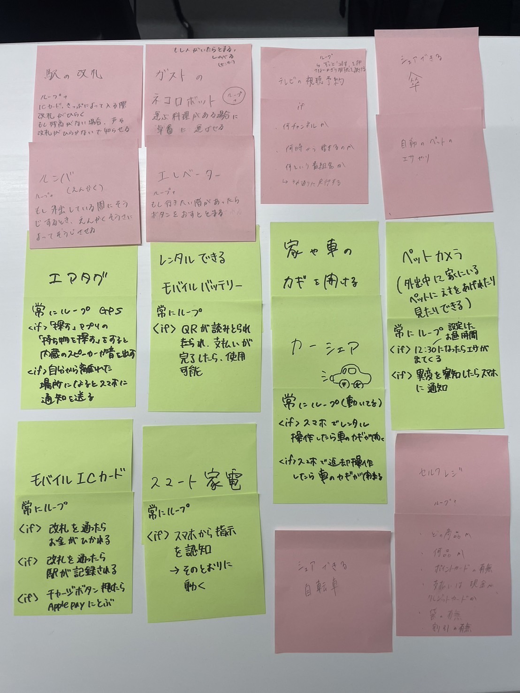
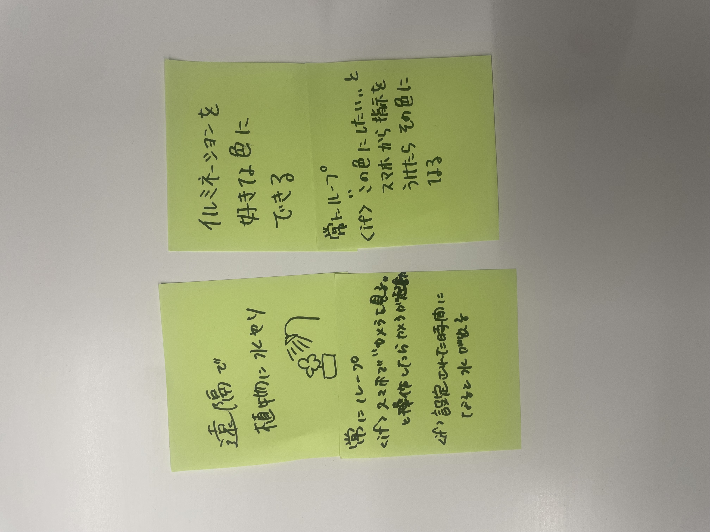

1 プログラムでモノを動かしているものにはどんなものがあるか？グループワークした内容

2 ↑で挙げたものをプログラミング的な思考で手順を説明
・駅の改札
【常にループ】
【if;ICカードや切符を読み取り金額が足りれば改札を開く】
【if;残高が足りてなければ音を鳴らし赤く光る】
・ガストのネコロボット
【常に進む】
【if;料理と持っていく卓を認識し届ける】
【if;人や障害物があった際には、止まり音声を発する】
・エアタグ
【常にループ】
【if;「探す」アプリの「持ち物を探す」とすると内臓のスピーカーが音を出す】
【if;自分から離れた場所になるとスマホに通知を送る】
・スマート家電
【常にループ】
【if;スマホからの指示を認識しその通りに動かす】
【if;スマホからの指示を認識しその通りに動かす】
3 プログラミングでどんなことができそうか？自分で考えたアイディア
